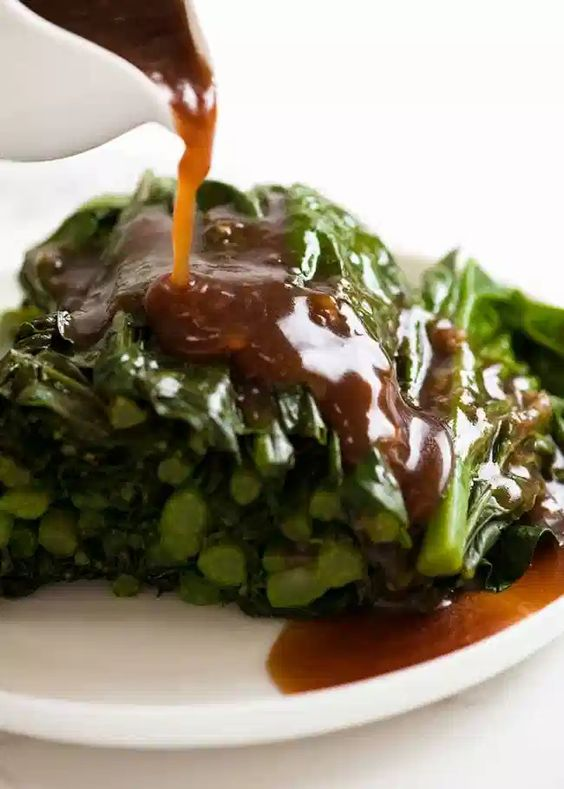

Chinese Broccoli
Description
Real Restaurant Style Chinese Broccoli with Oyster Sauce, a classic at Yum Cha (Dim Sum). This sauce is the real deal, and it requires more than just oyster sauce to make it restaurant style! This sauce goes fabulously with any Chinese greens, like bok choy and pak choy. Taken from: Recipe Tin Eats.com.
Ingredients
- 1 bunch Chinese broccoli
- 3/4 tsp corn flour / corn starch
- 3 tbsp water
- 2 tbsp oyster sauce
- 2 tsp soy sauce , light or all purpose (not dark soy)
- 1 tbsp Chinese cooking wine (sub Mirin or Dry Sheer, Note 1)
- 1/2 tsp sesame oil
- 1/2 tbsp vegetable oil (or canola or peanut)
- 1/2 tsp sugar
- 1 clove garlic , finely grated
- 1 tsp ginger , finely grated
Steps
- Trim ends off Chinese Broccoli. If any stems are super thick, cut them in half (you want all stems approximately the same width).
- Steam Chinese Broccoli using whatever method you want - I microwave in a steamer on high for 4 minutes. The stem should be just cooked - not super soft and floppy.
- Stack the Chinese broccoli together and cut into 4"/10cm lengths, then stack neatly on top of each other.
- Combine water and corn flour in small saucepan, mix to dissolve.
- Then add remaining ingredients, turn stove onto medium and bring to boil. Boil for 30 seconds to allow to thicken, then remove from stove.
- Drizzle over Chinese broccoli and serve. Best served warm.
For oyster sauce: